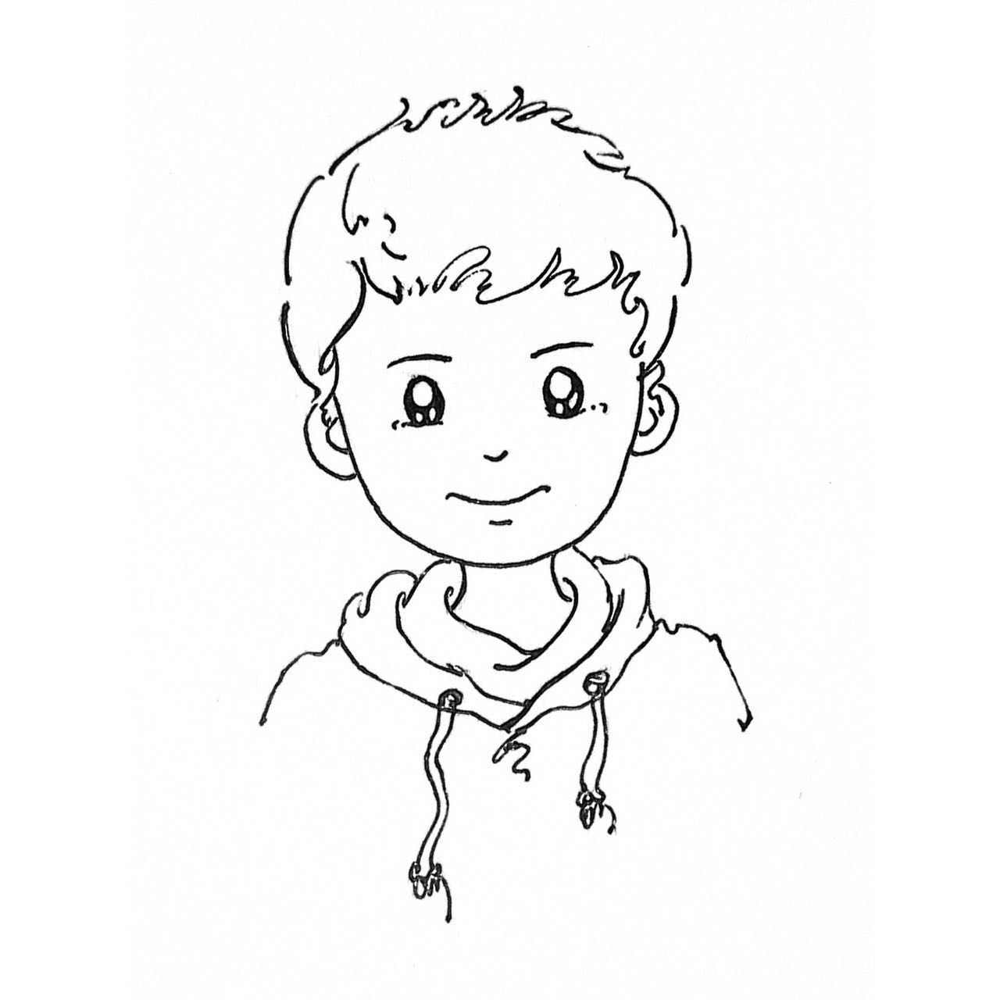

<div id="signature-pad" class="m-signature-pad">
    <div class="img-body">
        <!---->
        
    </div>
    <div class="m-signature-pad--body">
        
    </div>
</div>

<div class="tools">
    <button id="j_gray">灰度图片(2、3)</button>
    <button id="j_invert">反转颜色(4)</button>
    <button id="j_red">红色蒙版</button>
</div>

